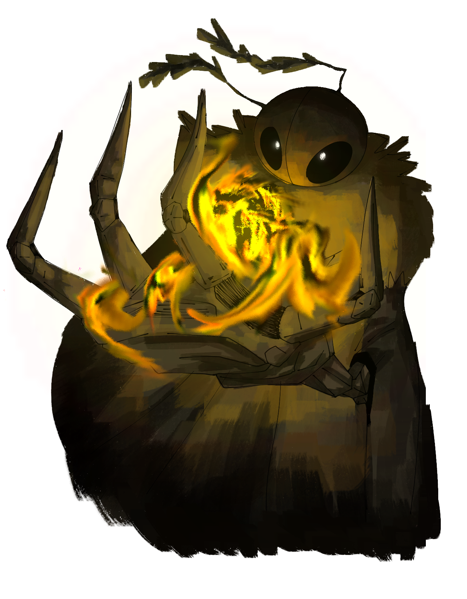

A Mariposa
Ele existe? | Classe: Rastejante? 
Dizem que suas asas são feitas de láminas, e que sua presença é um sussurro antes da morte. A Mariposa não é mais um indivíduo — é uma presença. Durante a Era Dourada, um jovem foi capturado por cientistas de Paladium e submetido a experimentos psicológicos e físicos extremos, sendo isolado em escuridão total por décadas, exposto a manipulações psíquicas e químicas, e forçado a assistir a mortes de outros da própria espécie.
Quando escapou, ele não era mais um indivíduo — era uma maldição. Hoje, ninguém sabe se "A Mariposa" é um só ser, ou uma maldição que se repete. Suas asas não fazem som. Seu cheiro é o de flores podres. E sua aparição precede tragédias silenciosas.
Especializado em assassinatos, manipulação de medo, ilusões sensoriais e execuções rápidas, A Mariposa raramente é vista, mas suas vítimas são encontradas em posições ritualísticas, com olhos queimados e bocas com uma fumaça negra saindo delas.

Atributos
- DES: ???
- INT: ???
- RM: ???
- RF: ???
- FR: ???
- SAU: ???
- FAMA: ???
- SEN: ???
- COS: 75%
Habilidades
- SEM INFORMAÇÕES
Curiosidades
- Pode ter sido o primeiro insectoide criado artificialmente.
- Seu ódio por Paladium é visível, mas suas motivações são desconhecidas.
- Alguns acreditam que ele já morreu várias vezes, mas sempre retorna.
- Laboratórios de Paladium ainda guardam registros censurados sobre seus experimentos.
- Vítimas com uma fumaça negra em suas bocas são encontradas onde dizem ter o visto.
- Pessoas que alegam ter o visto, dizem que a mariposa possuía entre 2m a 3m de altura, nunca é uma altura precisa.
- Um dos poucos personagens que consegue manipular S▒O▓M░B▐R▌A.